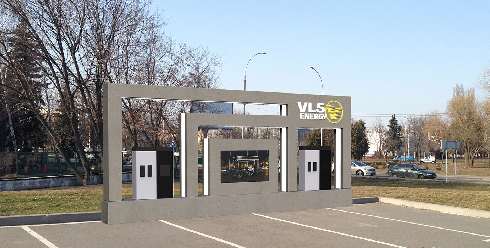
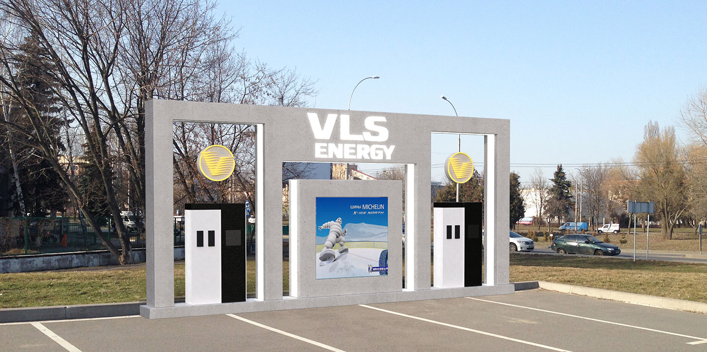

- Особенности бренда:
- Дизайн станции должен быть стандартом заправочных электростанций. Сочетание HI-tech, Loft и Eco стилей. Уникальные дизайнерские решения для лидера и основателя рынка. Пожелания к внешнему виду:
- Изысканный международный экологический, стильный.
- С возможностtью антивандальной защиты.
- Пример дизайна, который нравится: Стиль АЗС «Сокар».
- Запрещено использовать кирилицу. Запрпавки не должны ассоциироваться ни с чем пост-советским, славяноязычным. Никаких березок, шароваров и кокошников.
Дизайн АЗС Инфоборд
Разработка трех концептов дизайна конструкции АЗС на примере станции городского типа.
Kvadrat

